ELF：在连续嵌入空间里做流匹配，只在最后一步变回词的语言模型
ELF: Embedded Language Flows
GitHub star 为 2026-10-20 的快照。阅读状态、进度与收藏只保存在你的浏览器里。
逐节精读
这部分按论文的章节顺序，用本站自己的话把整篇论文从头讲一遍。读懂某个概念需要的背景知识，会在第一次用到它之前单独讲清楚（青色框）。每个结论都尽量说出“因为什么、所以什么”。这篇论文以 CC BY 4.0 许可发布，所以原文的图直接放在讲到它的地方，并说明怎么看；原图没画到的概念，用本站的示意图补上。本页依据 arXiv v2（2026-06-26），它比 v1（2026-05-11）多了附录 B 的蒸馏实验；正文里，v2 把图 7 说明中对蒸馏模型的措辞从“可与之相当”（rivals）改成了“胜过”（outperforms），并在图 7c 补上了 LangFlow 的训练 token，表 1 的数字两版相同。标“推算”的数字是本站根据论文数据算出来的，不是论文原话；标“读图”的数字是从原文图上估读的近似值。每节末尾有英文原文的链接。
0 导读：这篇论文解决什么问题
扩散模型和流模型在图像、视频上已经是事实上的标准做法：从一团高斯噪声出发，一步步把它“推”成一张干净的图。把这套方法搬到文字上，就得到扩散语言模型（diffusion language model，下文简称 DLM）。DLM 有两条路线。离散路线直接在词（token）上加噪，比如把词换成 [MASK]（MDLM、LLaDA）或者随机换成别的词（Duo）。连续路线先把每个词变成一个向量，再像处理图像那样往向量上加高斯噪声（Diffusion-LM、CDCD、Plaid）。最近几年几乎所有进展都发生在离散路线上，因为它的效果一直更好。
这篇论文想回答的问题是：连续路线落后，到底是因为语言天生是离散的，还是因为过去的连续方法设计得不够好？作者押的是后者。他们提出 ELF（Embedded Language Flows，嵌入语言流），做法可以用一句话概括：用一个冻结的 T5 编码器把整句话编码成一串连续向量，然后在这些向量上做图像领域常用的流匹配（flow matching），整个去噪过程都待在连续空间里，只在最后一步才由同一个网络把向量变回词。因为它和图像上的流模型几乎一样，图像领域现成的技巧（无分类器引导 CFG、随机采样器、蒸馏）可以直接拿来用。
论文报告的主要结果（都在 OpenWebText 上，模型约 1 亿参数）：ELF-B 用 32 步采样，生成困惑度约 24，而同等设置下的离散模型 MDLM、Duo 和同期的连续模型 FLM、LangFlow，即使用 1024 步也在约 36 或更高（读图）；ELF 的训练只看了约 45B 个 token，对手估计在 524B 以上。在机器翻译（WMT14 德→英）和摘要（XSum）上，ELF-B 也是同规模模型里分数最高的。v2 新增的渐进蒸馏把 ELF 压到 1 步，生成困惑度 136，低于对手蒸馏模型的 1 步结果。
这些数字的“份量”需要仔细看：比较的指标是生成困惑度而不是似然，各方法的分词器、样本多样性、训练数据的来源都不完全一致。第 4.5 节会逐条说清楚。
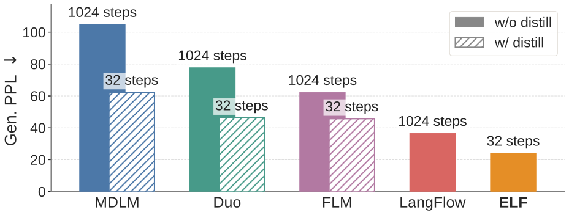
读完这部分，你应该能回答这几个问题：
- 连续扩散语言模型过去卡在哪里？“在每一步都把向量拉回词”为什么是一个关键的设计选择？
- 流匹配是什么？ELF 为什么让网络预测干净向量 \(\mathbf{x}\)，而不是速度或噪声？
- 不训练单独的解码器，ELF 怎么把向量变回词？为什么最后一步的输入还要专门加噪？
- 在无条件生成里没有“条件”，CFG 引导的是什么？训练时 CFG 又是怎么省掉第二次前向计算的？
- “32 步胜过 1024 步”“训练 token 少 10 倍”分别是在什么条件下得出的，哪些因素没有对齐？
- ELF 和同期的 FLM、LangFlow 有什么不同？
1 引言：连续扩散语言模型为什么一直落后，ELF 押的是什么
离散路线直接在词表上定义加噪过程。掩码扩散（MDLM，以及放大到 80 亿参数的 LLaDA）把词逐渐替换成 [MASK]，去噪就是把 [MASK] 一个个猜回来；均匀态扩散（Duo）把词随机换成别的词，去噪时可以反复修改已经写下的词。它们的训练目标都是某种加权的交叉熵，能给出似然的上界，困惑度已经接近同规模的自回归模型。
连续路线先给每个词一个向量（嵌入），再往向量上加高斯噪声，用和图像扩散一样的网络去噪，最后把去噪得到的向量“取整”成最近的词。开创性的 Diffusion-LM（2022）就是这样做的。这条路线有几个老问题：
- 数据分布是一堆孤立的点。词表里每个词对应嵌入空间里的一个点，一句话就是这些点的一个组合。图像的像素值是连续变化的，相邻的值都是合法的；而两个词向量“中间”的位置不对应任何词。如果网络只学“预测干净向量的平均值”，在不确定是 A 还是 B 时它会输出两者的中点，取整时就可能落到错误的词上。Diffusion-LM 精读页把这叫作取整误差（§4.2）。
- 为了对抗取整误差，几乎每一步都要和词表挂钩。Diffusion-LM 在训练里加了“把向量取整回词”的交叉熵项，推理时每一步还要把预测钳到最近的词向量（clamping）；CDCD 干脆用交叉熵训练网络，在每个噪声水平上都预测词的分布。这样做有效，但每一步的状态都被拉向词表，连续空间的“自由”就少了很多。
- 嵌入一起学容易塌缩，似然也难算。如果嵌入和去噪网络一起训练，最省事的解是把所有嵌入挤到一起（去噪损失变小，但词分不开了），所以需要额外的约束。另外，连续模型给出的是向量的概率密度，要换算成“这句话的概率”并不直接。2023 年的 Plaid 专门攻似然，用 10 亿参数才在似然上超过 1.24 亿参数的 GPT-2（见 Diffusion-LM 精读页的“后来怎么样了”）。
以上是本站对这条路线历史的归纳。离散路线没有取整问题，训练目标就是交叉熵，所以更容易照搬大规模训练的经验，这是它成为主流的重要原因。
作者把 ELF 说成在两个意义上“连续”。第一，连续的状态空间：整个去噪过程都在连续嵌入里进行，只在最后一个时间步才考虑离散化。第二，连续的时间：采用流匹配的写法，时间 \(t\) 在 \([0,1]\) 上连续变化，速度场就是状态对时间的导数。第二点的好处是，流匹配现在是图像、视频扩散模型（Stable Diffusion 3、FLUX、Wan 等）最常用的实现方式，那边的进展可以直接迁移过来。
构造连续空间的方式借鉴了图像领域的潜空间扩散（Latent Diffusion Models，LDM）：先用一个编码器把输入变成连续表示，扩散在这个表示上进行。编码器可以是预训练的、一起训练的，甚至是随机初始化后冻结的。和 LDM 不同的是，ELF 不需要单独的解码器。作者的观察是：流匹配的最后一个时间步本来就可以拿来做“从连续到离散”的映射，所以让同一个网络在最后一步切换成“解码模式”，直接输出词。推理时因此没有任何额外部件。
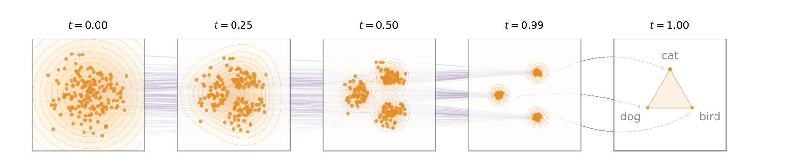
论文把 ELF 放在两类已有方法之间来定位。和 Diffusion-LM、CDCD 这些先驱相比，它不在每一步都加离散化损失（比如交叉熵），几乎所有步都只在连续空间里去噪，作者认为这给了流的动态“最大的自由度”。和潜空间扩散语言模型（LD4LG、Cosmos 等）相比，它不压缩表示，直接在高维的逐词嵌入上工作（这一点受到同组 JiT 工作的启发，第 3.2 节讲），也不需要单独训练的解码器。下面的示意图把三种做法放在一起。
实验上，作者按照前人的评测协议，把 ELF 和离散的 MDLM、Duo 以及同期的连续模型 FLM、LangFlow 比较，结论是 ELF 用更少的采样步数得到更好的生成质量，而且训练 token 少约 10 倍、不需要任何蒸馏；在机器翻译和摘要上也表现很强。作者由此认为，连续 DLM 只需要对“离散”做最少的处理就能很有竞争力。
- 这里的“嵌入”不是查表得到的词向量，而是 T5 编码器对整句话做双向编码后、每个位置输出的上下文向量。同一个词在不同句子里的向量不同。第 3.1 节和第 4.2 节会说明这个选择有多重要。
- “只在最后一步离散化”指的是推理轨迹上不做任何取整或投影。训练时，同一个网络有 20% 的样本在练“解码”，交叉熵的梯度照样会流进共享的权重里，所以词级监督并没有消失，只是不再作用于中间状态。
2 背景与相关工作：流匹配，以及连续扩散语言模型的几条路线
扩散模型和流模型做的是同一件事：学一个把噪声变成数据的过程。DDPM 一类的写法把这个过程拆成很多离散的小步，每一步预测加进去的噪声。流匹配换了一个更直接的视角：在噪声和数据之间画一条路径，学这条路径上每一点的速度，生成时沿着速度积分（解常微分方程，ODE）即可。
ELF 用的是最简单的直线路径。设 \(\mathbf{x}\) 是一个干净的数据点（这里是一串嵌入），\(\boldsymbol{\epsilon}\sim\mathcal{N}(0,I)\) 是噪声，时间 \(t\in[0,1]\)：
注意 ELF 的时间方向：\(t=0\) 是纯噪声，\(t=1\) 是干净数据。这和 DDPM、MDLM 的习惯（\(t=0\) 是数据）正好相反，读公式时要先对齐。
举个一维的例子。设 \(x=3\)，抽到的噪声 \(\epsilon=-1\)。那么 \(t=0.5\) 时 \(z=0.5\times3+0.5\times(-1)=1\)，速度 \(v=3-(-1)=4\)。从 \(z_{0}=-1\) 出发，以速度 4 走完时间 1，正好到达 3。对单个训练对来说，路径是一条直线，速度处处相同。
训练时，网络看到 \(\mathbf{z}_{t}\) 和 \(t\)，要输出速度，损失是和真值 \(\mathbf{x}-\boldsymbol{\epsilon}\) 的均方误差。问题在于，同一个 \(\mathbf{z}_{t}\) 可能来自很多不同的 \((\mathbf{x},\boldsymbol{\epsilon})\) 组合，网络能学到的只是这些速度的平均值。所以真实学到的速度场不是直线：在 \(t\) 很小、还看不出是哪个数据点时，它指向各种可能终点的“平均方向”；随着 \(t\) 增大、信息越来越明确，它才逐渐拐向某一个具体终点。生成时要用很多小步（比如欧拉法：每步 \(\mathbf{z}\leftarrow\mathbf{z}+\Delta t\cdot\mathbf{v}_{\theta}\)）跟着这条弯曲的轨迹走，步子太大就会走偏。这也是后面“少步采样”和“蒸馏”要解决的问题。
2.1 已有连续扩散语言模型的分类
论文的附录 A 用一张大表（原文表 2）把三十来个连续扩散/流语言模型按五个维度分类：用什么过程（DDPM、得分 ODE、流匹配等）、在什么状态空间里去噪、训练时每一步是否把中间状态对齐到词（比如中间步也算交叉熵）、推理时每一步是否把状态投影回词（比如取最近的词向量、在单纯形上取 argmax）、是否需要单独的解码器。下表是本站按这张表整理的简化版。
| 类别 | 代表 | 过程 | 状态空间 | 训练时逐步对齐词 | 推理时逐步投影 | 单独解码器 |
|---|---|---|---|---|---|---|
| 嵌入空间扩散 | Diffusion-LM、DiffuSeq | DDPM | 可学习的词嵌入 | 是 | 是 | 否 |
| 嵌入空间扩散 | CDCD、Plaid、SeqDiffuSeq、FlowSeq 等 | 得分 ODE / 变分下界 / DDPM / 流匹配 | 可学习的词嵌入 | 是 | 否 | 否 |
| 单纯形扩散 | SSD-LM、TESS、TESS 2 | DDPM | 词表大小的单纯形 | 是 | 是 | 否 |
| 潜空间扩散 | LD4LG、PLANNER、TEncDM、Cosmos、CoDAR | （VP-）DDPM / VP-SDE | 冻结的预训练编码器 | 否 | 否 | 是 |
| 同期的流语言模型 | FLM、DFM、CFM、LangFlow | 流匹配（LangFlow 是 Bregman 散度版本） | one-hot / 单纯形 / 可学习嵌入 | 是 | 否 | 否 |
| ELF | — | 流匹配 | 冻结的预训练编码器 | 否 | 否 | 否 |
从这张表能看出 ELF 的定位：它和潜空间扩散一样用冻结编码器、中间步不对齐词表；但它用的是连续时间的流匹配和直线插值，而潜空间扩散大多沿用 DDPM 的噪声表；最关键的是，后三列它全是“否”：既不逐步对齐词，也不需要单独的解码器。原表里另一个三列全否的是在单纯形上做流匹配的 Fisher-Flow；在嵌入或编码器表示上做到这一点的只有 ELF。
作者认为，单纯形、比特编码这类“连续松弛”方法虽然状态是连续的，但轨迹仍然被单纯形约束、按词对齐的比特编码或词级交叉熵绑在离散词表上；潜空间扩散则多用 DDPM 的噪声表，还要一个单独的解码器（有的分阶段训练，有的和扩散模型联合训练）。ELF 用的是流匹配的直线插值，不需要单独的解码器，因此能直接享受流匹配方面的新进展。
2.2 同期的流语言模型：FLM、LangFlow 与 ELF 的根本区别
2026 年上半年，有好几篇工作几乎同时用流匹配重做连续语言模型，本站另有两篇精读：
- Flow Map Language Models（FLM / FMLM）在 one-hot 编码（每个位置一个词表长度的向量）上定义连续流，用尊重单纯形几何的交叉熵目标学习流和它的“流映射”（从任意时刻一步跳到终点的映射），蒸馏出的 FMLM 可以一步生成。
- LangFlow 在可学习的词嵌入上做流匹配，通过 Bregman 散度把嵌入空间扩散和流匹配联系起来；它还推导了基于 ODE 的负对数似然界，用来报告困惑度，并提出可学习的 Gumbel 噪声表。
- 离散流映射（DFM）和类别流映射（CFM）分别在单纯形上做类似的事，也引入了蒸馏。
论文指出，这几篇的共同点是沿着整条流的轨迹都使用词级交叉熵监督，区别只在状态空间（单纯形、one-hot、嵌入）。ELF 恰恰相反：轨迹完全留在不受约束的连续嵌入里，词级监督只用在最后的解码步。第 6 节有一张三者的对照表。
离散路线方面，论文提到 D3PM 的一般离散加噪、MDLM 的掩码扩散、Duo 的均匀态扩散、E2D2 等半自回归的块扩散，以及在离散和连续空间里联合去噪的混合方法，并承认离散扩散目前仍是扩散语言模型的主流。
英文原文 §2 ↗ · 附录 A（分类表）↗ · 相关：旧版“从头讲起”的三族对照
3 方法：ELF 的完整做法
3.1 从词到连续嵌入：冻结的 T5 编码器
最简单的“把词变成向量”是查表：词表里每个词有一行固定的向量，叫词嵌入。它和上下文无关，“bank”在“river bank”和“bank account”里是同一个向量。
上下文嵌入则是把整句话送进一个双向的 Transformer 编码器，取每个位置最后一层的输出。因为每个位置都看到了整句话，同一个词在不同句子里的向量不同，向量里还混进了句法和语义信息。T5 是 Google 2019 年发布的编码器—解码器模型，它的编码器正是这样一个双向 Transformer。ELF 用最小号 T5-small 的编码器：约 3,500 万参数，每个位置输出一个 512 维向量。T5 论文报告，它公开发布的各尺寸模型是在多任务混合数据上预训练的，总共训练了超过 1 万亿个 token。
具体流程如下。一句话先被分词成 \(\mathbf{s}=[s_{1},\dots,s_{L}]\)，每个 \(s_{i}\) 取自词表 \(\mathcal{V}\)，\(L\) 是序列长度（OWT 实验里是 1024）。然后用冻结的、预训练好的 T5-small 编码器把它编码成 \(L\) 个 512 维向量，作为干净数据 \(\mathbf{x}\)。加噪之前，先用在 OWT 上估计的均值和标准差把这些向量标准化（官方配置里的标准差取 0.2）。
网络内部还有一个瓶颈层：先把 512 维的嵌入线性投影到 128 维，再投影回模型的隐藏维度（ELF-B 是 768 维）。这个设计来自同组的 JiT（见 3.2 节），附录 D.2 的消融显示 128 维比 32 维和 512 维的平衡更好（第 4.2 节）。
编码器只在训练时用来产生 \(\mathbf{x}\)。无条件生成时，推理从纯噪声开始，一路去噪到最后一步再解码，全程用不到编码器，所以推理时没有额外部件。作者也试了别的嵌入：从零在 OWT 上训练的编码器、T5 的查表词嵌入、随机高斯嵌入、和去噪网络一起训练的嵌入，结果见第 4.2 节。
3.2 在嵌入上做流匹配：为什么让网络预测干净嵌入 x
有了 \(\mathbf{x}\)，ELF 就按第 2 节的直线路径加噪：\(\mathbf{z}_{t}=t\,\mathbf{x}+(1-t)\,\boldsymbol{\epsilon}\)，速度 \(\mathbf{v}=\mathbf{x}-\boldsymbol{\epsilon}\)。标准的流匹配让网络直接输出速度；ELF 跟随图像生成的最新做法，让网络直接输出干净嵌入，记作 \(\mathbf{x}_{\theta}=\mathrm{net}_{\theta}(\mathbf{z}_{t},t)\)，叫作 x 预测。
x 预测和速度可以互相换算。由 \(\mathbf{z}_{t}=t\mathbf{x}+(1-t)\boldsymbol{\epsilon}\) 解出 \(\boldsymbol{\epsilon}=(\mathbf{z}_{t}-t\mathbf{x})/(1-t)\)，代入 \(\mathbf{v}=\mathbf{x}-\boldsymbol{\epsilon}\) 得到 \(\mathbf{v}=(\mathbf{x}-\mathbf{z}_{t})/(1-t)\)。所以网络输出 \(\mathbf{x}_{\theta}\) 之后，用同一个关系换成预测的速度 \(\mathbf{v}_{\theta}=(\mathbf{x}_{\theta}-\mathbf{z}_{t})/(1-t)\)，损失仍然在速度上算：
右边的等号说明：在速度上算损失，等价于在 x 上算损失再乘一个权重 \(1/(1-t)^{2}\)。越接近干净数据（\(t\to1\)），权重越大。为了防止除以接近 0 的数，官方代码把 \(1-t\) 的下限钳在 0.05，也就是权重最大 400（推算）。
ELF 的作者之一 Tianhong Li 和 Kaiming He 在 2025 年的 JiT（“Back to Basics: Let Denoising Generative Models Denoise”）里提出：今天的扩散模型大多预测噪声或速度这类“带噪的量”，但按照流形假设，自然数据（图像）只占高维空间里一个低维的“曲面”，而噪声和速度是铺满整个高维空间的。网络要准确输出一个铺满 768 维的噪声向量，需要很大的容量；要输出一个落在低维曲面上的干净点，则容易得多。JiT 用这一点，让直接在像素块上工作的普通 Transformer（每个块 16×16×3=768 维）做出了有竞争力的图像生成，而同样设置下预测噪声会彻底失败。
ELF 每个位置的嵌入也是几百维的高维向量，情况类似。
论文给出 x 预测对 ELF 重要的两个理由。第一，它让流匹配在高维表示上也能正常工作，这和 JiT 的观察一致，附录 D.1 的消融（下图）直接验证了这一点。第二，x 预测和最后一步的解码目标天然对齐：解码时，网络的输出要乘以一个“反嵌入”矩阵得到每个词的分数，所以网络输出的必须是一个干净嵌入。如果去噪时网络输出速度、解码时输出干净嵌入，同一套权重就要在两种含义完全不同的输出之间来回切换，共享权重的好处就打了折扣。作者观察到，当权重与最后的离散化步共享时，v 预测的效果很差。
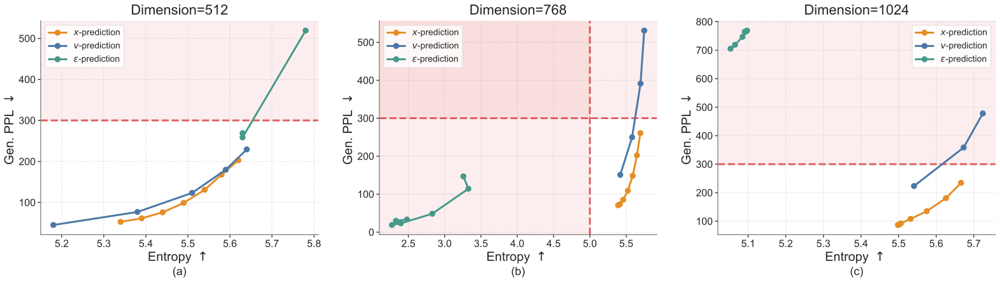
噪声幅度与训练时间的分布。附录 C.1 还有两个影响很大的细节。其一，加噪时高斯噪声被乘以 2，即 \(\mathbf{z}_{t}=t\mathbf{x}+(1-t)\cdot2\boldsymbol{\epsilon}\)（标准化后的嵌入大致是单位尺度）。这相当于把整条路径往“更嘈杂”的方向挪：信号幅度 \(t\) 和噪声幅度 \(2(1-t)\) 相等的位置从 \(t=0.5\) 移到了 \(t=2/3\)（推算）。其二，训练时的 \(t\) 不是均匀抽取，而是先抽 \(u\sim\mathcal{N}(-1.5,\,0.8^{2})\)，再取 \(t=\sigma(u)\)（\(\sigma\) 是 sigmoid），这叫 logit-normal 分布。它的中位数是 \(\sigma(-1.5)\approx0.18\)（推算），也就是说，训练的大部分样本落在噪声很重的那一端。
3.3 回到词：最后一步由同一个网络“解码”
生成的结果必须是词，所以 ELF 要在最后一个时间步 \(t=1\) 把干净嵌入变回词。论文的观点是：把流匹配的最后一步自然地看作“从连续到离散的解码”，就不需要单独的解码器，或者说，解码器和去噪器共享同一套权重。
这里有一个技术问题。按定义，网络在最后一步的输入应该是 \(t\to1\) 时的 \(\mathbf{z}_{t}\)，而 \(\mathbf{z}_{t}\to\mathbf{x}\)，也就是完全干净的 T5 编码。从干净的 T5 编码认出原来的词几乎没有难度，网络学到的东西对推理没有帮助：推理时去噪器交上来的嵌入并不完美，带着各种误差。所以 ELF 在这一步专门造了一个逐词腐蚀的训练输入 \(\tilde{\mathbf{z}}\)：对每个位置单独抽一个保留比例 \(p\)（logit-normal，参数 \(0.8\) 和 \(0.8\)，见上图橙色曲线），令 \(\tilde{\mathbf{z}}=p\,\mathbf{x}+(1-p)\cdot k\boldsymbol{\epsilon}\)，其中噪声倍数 \(k\) 在 OWT 上取 5，在翻译、摘要上取 1。
按中位数 \(p\approx0.69\)、\(k=5\) 算，噪声幅度约为 \(0.31\times5\approx1.55\)，是信号幅度 0.69 的两倍多（推算）。也就是说，解码分支看到的很多位置其实已经被噪声淹没，网络必须借助周围的上下文才能认出这个位置原来是哪个词，有点像掩码语言模型做的事。作者的说法是，同一个序列里不同位置的腐蚀程度不同，迫使解码模式学会“从上下文恢复被腐蚀的嵌入”，从而让推理时的离散化对去噪器的误差更稳健。
解码的计算是：同一个网络 \(\mathrm{net}_{\theta}\) 把 \(\tilde{\mathbf{z}}\) 映射成干净嵌入 \(\mathbf{x}_{\theta}(\tilde{\mathbf{z}})\)，再乘以一个可学习的“反嵌入”矩阵 \(W\) 得到每个位置在词表上的分数（logits），和真实的词 \(\mathbf{s}\) 算逐词交叉熵：
为了让同一个网络知道自己现在是在“去噪”还是“解码”，输入里除了时间 \(t=1\)，还有一个二值的模式标记（denoise / decode）。推理时，只在最后一步以解码模式调用一次网络，算出 \(W\mathbf{x}_{\theta}\)，对每个位置取分数最高的词（argmax）。
3.4 伪代码：训练与推理
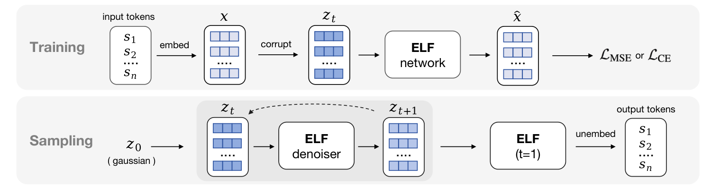
论文的算法 1、2 写得很短，下面是本站按算法 1、2 和附录算法 3–5 改写的简化版（省略了自条件与 CFG，3.5 节再补上）：
# 训练：每个样本随机进入一个分支
x = T5_encoder(tokens) # 冻结；再按 OWT 统计量标准化
if rand() < 0.8: # 去噪分支
t = sigmoid(normal(-1.5, 0.8)) # 每条序列一个 t
eps = 2.0 * randn_like(x)
z = t * x + (1 - t) * eps
x_hat = net(z, t, mode="denoise")
v_hat = (x_hat - z) / max(1 - t, 0.05)
loss = mse(v_hat, x - eps)
else: # 解码分支
p = sigmoid(normal(0.8, 0.8, per_token=True))
z = p * x + (1 - p) * 5.0 * randn_like(x)
h = net(z, t=1, mode="decode")
loss = cross_entropy(W @ h, tokens)
# 推理（ODE 版本）
z = 2.0 * randn(L, d)
for t, t_next in time_grid: # 例如 32 个区间
x_hat = net(z, t, mode="denoise")
z = z + (t_next - t) * (x_hat - z) / (1 - t)
tokens = argmax(W @ net(z, t=1, mode="decode"))需要注意的是，推理时生成 \(N\) 步，实际要调用网络 \(N+1\) 次：\(N\) 次去噪，加上最后 1 次解码（推算，依据算法 2 和 5）。
中间状态长什么样？附录 F.1 把去噪过程中几个中间时刻的预测解码成文字，得到下面这张图（论文没有交代中间状态具体是怎样解码的）。
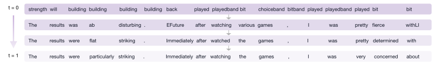
3.5 自条件与 CFG：没有类别标签时引导什么
CFG（Ho 与 Salimans，2021）的做法是：训练时随机丢掉条件 \(\mathbf{c}\)，让同一个网络既会做有条件预测 \(\mathbf{v}(\mathbf{z}_{t}\mid\mathbf{c})\)，也会做无条件预测 \(\mathbf{v}(\mathbf{z}_{t}\mid\varnothing)\)。采样时把两者线性外推：
\(\omega=1\) 就是普通的有条件采样；\(\omega>1\) 时，沿着“有条件减去无条件”的方向多走几倍，样本更贴合条件、质量更高，但多样性下降。代价是每一步要算两次网络。
自条件来自 Analog Bits（Chen、Zhang、Hinton，2023），在扩散语言模型里很常用。普通的去噪网络每一步只看当前的 \(\mathbf{z}_{t}\)，上一步自己算出的干净预测就被扔掉了。自条件把上一步的预测 \(\hat{\mathbf{x}}'\) 也喂给网络：输入变成把 \([\mathbf{z}_{t},\hat{\mathbf{x}}']\) 沿特征维拼起来（ELF 再用一个线性层投影回原来的维度）。训练时，以 50% 的概率先算一遍得到 \(\hat{\mathbf{x}}'\)（不回传梯度），再把它作为输入算第二遍；另外 50% 的样本用全零代替 \(\hat{\mathbf{x}}'\)。推理时直接用上一步的预测，所以推理不增加网络调用。
ELF 的关键想法是：把自条件信号当作 CFG 的条件。也就是令 \(\mathbf{c}=\hat{\mathbf{x}}'\)，“无条件”就是自条件输入为零。这样 CFG 引导的是：从“不知道上一步猜了什么”的预测，朝“参考了上一步的猜测”的预测方向外推。直观上，这会让每一步的预测更果断、更快收敛到某个具体的句子。因为自条件本来就是 DLM 的标准部件，加 CFG 几乎不增加开销。
训练时 CFG。为了连第二次前向都省掉，ELF 采用图像生成里的“训练时 CFG”（MeanFlow、改进版 MeanFlow 等工作的做法）：让网络直接输出引导后的速度 \(\mathbf{v}_{\text{cfg}}\)，引导强度 \(\omega\) 作为输入告诉网络。训练时每个样本随机抽一个 \(\omega\in[0.5,5]\)（偏向小值），有自条件的样本用下面的目标（\(\mathrm{sg}\) 表示不回传梯度）：
没有自条件的样本目标就是普通的 \(\mathbf{x}-\boldsymbol{\epsilon}\)。为什么这样训出来的网络输出的正好是 CFG 后的速度？本站补一个推导：记网络有条件和无条件的输出为 \(\mathbf{u}_{c}\)、\(\mathbf{u}_{\varnothing}\)。均方误差的最优解是目标的条件期望，所以无条件分支收敛到真正的无条件速度 \(\mathbf{u}_{\varnothing}=\mathbf{v}_{\varnothing}\)；有条件分支满足 \(\mathbf{u}_{c}=\mathbf{v}_{c}+(1-1/\omega)(\mathbf{u}_{c}-\mathbf{u}_{\varnothing})\)，移项得 \(\mathbf{u}_{c}/\omega=\mathbf{v}_{c}-(1-1/\omega)\mathbf{v}_{\varnothing}\)，即 \(\mathbf{u}_{c}=\omega\mathbf{v}_{c}+(1-\omega)\mathbf{v}_{\varnothing}\)，正是 CFG 的公式。\(\omega=1\) 时目标退化为不引导的情况。由于 ELF 用 x 预测，上式里的速度都是从网络的 x 输出换算来的。
怎样把这么多条件告诉网络。现在网络要同时知道时间 \(t\)、引导强度 \(\omega\) 和模式（去噪 / 解码）。图像扩散的标准做法 adaLN-Zero（DiT 用的）把所有条件相加后去调制每一层的归一化，条件种类一多就不太好用，还要额外的参数。ELF 改用上下文条件：在序列前面加 12 个控制标记——4 个时间标记、4 个 CFG 强度标记、4 个模式标记，每个标记和普通词嵌入一样维度，连续的值（时间、CFG 强度）用位置编码的方式编码，网络通过自注意力读取它们。附录 D.4 显示这样做效果略好，并且把 ELF-B 的参数从 1.48 亿降到 1.05 亿。
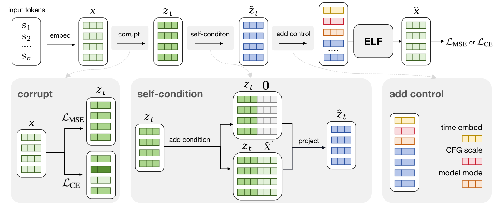
扩展到条件生成。翻译、摘要这类任务要根据输入序列生成输出。ELF 的做法是把输入序列的干净嵌入接在控制标记之后、目标序列之前，训练和推理时都不加噪，网络通过双向自注意力读取它。为了能对输入做 CFG，训练时以 10% 的概率把输入序列的嵌入整个置零，充当“无条件”。这时的条件 \(\mathbf{c}\) 同时包含自条件和输入前缀。推理时，输入条件的 CFG 用标准的两次前向做（附录 C.2），作者把这比作文生图里的 CFG，只不过这里是“文生文”。
- 无条件生成里的“CFG”并没有引入任何外部信息，它只是让模型更相信自己上一步的猜测。所以它的作用和降低采样温度类似：质量指标变好、多样性变差。第 4.2 节的图 4 正好显示了这种此消彼长。
- 训练时 CFG 能省掉推理时的第二次前向，但训练时的计算更多了：按附录算法 3，每个去噪样本都要先算一遍不带自条件的输出，再算一遍带自条件的输出，引导目标用到两者之差。
3.6 采样器：ODE、“SDE 风格”与时间表
因为 ELF 在连续时间、连续空间里定义，它天然支持两类采样。ODE 采样就是上面伪代码里的欧拉法，从噪声出发确定性地积分 \(d\mathbf{z}_{t}/dt=\mathbf{v}_{\theta}(\mathbf{z}_{t},t)\)。SDE 采样则在每一步注入一点新噪声。流匹配对应的随机微分方程（SDE）可以按 SiT 的推导写出，它的动态可以理解为每一步都注入无穷小的噪声。ELF 没有严格实现这个 SDE，而是用一个简单的近似，作者自己也说它主要模仿了“每步带随机性”这一点，所以称之为“SDE 风格”的采样器。
它的一步是这样的（附录算法 6）：设当前时刻 \(t\)、步长 \(\Delta t\)、噪声注入强度 \(\gamma\)。先令 \(\alpha=1-\gamma\Delta t\)，把时间退回到 \(t_{\text{back}}=\alpha t\)，同时把状态混入新噪声 \(\mathbf{z}_{\text{back}}=\alpha\mathbf{z}+(1-\alpha)\boldsymbol{\epsilon}\)；然后在 \((\mathbf{z}_{\text{back}},t_{\text{back}})\) 上调用网络，得到干净嵌入的预测，再用它更新状态。\(\gamma=0\) 时不注入噪声，退化为 ODE。
src/utils/sampling_utils.py 的 _sde_step）则用退回后的状态算速度，再从 \(\mathbf{z}_{\text{back}}\) 走 \(t+\Delta t-t_{\text{back}}\) 这么长到达下一时刻，这是 EDM 一类随机采样器的常见写法。代码里注入的噪声也乘了去噪分支的噪声倍数 2。复现论文数字时应以代码为准。时间表。采样时要把 \([0,1]\) 切成 \(T\) 段。ELF 默认用 logit-normal 时间表：从训练时同一个分布（参数 \(-1.5\) 和 \(0.8\)）抽 \(T-1\) 个时刻，排序后两端补上 0 和 1。这样靠近噪声端的步子小、靠近干净端的步子大。作者认为它有效有两个原因：越嘈杂的阶段越需要细致地离散化，而且推理的时间分布和训练时一致。官方代码显示这组时刻是每次采样时随机抽的，所以即使是“ODE 采样”，不同次运行的时间网格也不一样。
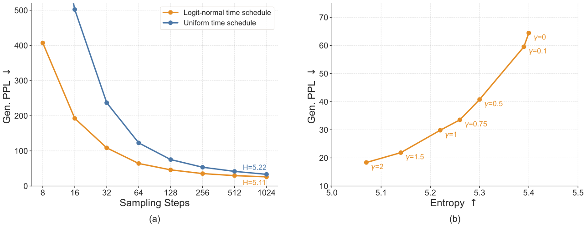
4 实验：消融、无条件生成、翻译与摘要
4.1 实验设置，以及生成困惑度这个指标
无条件生成沿用 MDLM、Duo、FLM、LangFlow 的实验设计：在 OpenWebText（OWT，约 90 亿 token 的网页文本）上训练，把文本打包成长度 \(L=1024\) 的序列。评测时生成 1,000 条样本，报告生成困惑度（Gen. PPL）和平均的单字频率熵。
条件生成有两个任务。机器翻译用 WMT14 德语→英语，序列长度 128（输入 64 + 输出 64），目标侧共 1.44 亿 token，指标 BLEU。摘要用 XSum（BBC 新闻配一句话摘要），序列长度 1088（输入 1024 + 输出 64），目标侧共 600 万 token，指标 ROUGE-1、ROUGE-2、ROUGE-L。这两个任务都当作序列到序列来做，不打包。
模型。嵌入来自冻结的 T5-small 编码器（3,500 万参数，512 维），经过 128 维的瓶颈再投影到模型宽度。网络是标准的扩散 Transformer（DiT），加上 SwiGLU、RMSNorm、RoPE、qk-norm 这些通用改进，条件用 3.5 节的上下文控制标记注入。三个尺寸如下（原文表 6），默认用 ELF-B 做消融：
| 模型 | 层数 | 隐藏维度 | 注意力头 | 参数量 | OWT 上训练的轮数 |
|---|---|---|---|---|---|
| ELF-B | 12 | 768 | 12 | 105M | 5 |
| ELF-M | 24 | 1056 | 16 | 342M | 4 |
| ELF-L | 32 | 1280 | 16 | 652M | 3 |
训练。优化器是 Muon（一种对矩阵参数的更新做正交化的优化器，2024 年提出），学习率 0.002、批大小 512。OWT 上训练 5 轮（约 9.5 万步），WMT14 和 XSum 上各训练 100 轮（约 88 万步和 4 万步）。80% 的样本走去噪分支（MSE），20% 走解码分支（交叉熵）。附录表 7 给出 ELF-B 在 64 块 TPU v5p 上每轮约 1.5 小时，5 轮约 7.5 小时（推算）。模型越大，论文给的训练轮数越少（ELF-M 4 轮、ELF-L 3 轮），理由是大模型在这个设置里学得更快。
似然（困惑度）衡量模型给真实文本打多少概率，是语言模型最基本的指标。自回归模型能精确算出来；离散扩散模型（MDLM、Duo）通常报告的是变分界给出的困惑度上界，真实值只会更低。
生成困惑度换了一个方向：让模型自己生成文本，再请一个现成的“裁判”模型（这里是 GPT-2 Large）给这些文本打分，算裁判眼里的困惑度。越低说明生成的文字越像正常英文。它有一个众所周知的漏洞：一直重复同几个高频词的文字，裁判也会觉得很“顺”，困惑度会很低。所以必须同时报告样本熵：每条样本里各个 token 出现频率的熵（以 nat 为单位），熵明显偏低就说明在重复。后面附录 B 的表 5 里，有一个蒸馏中途的模型 1 步生成的困惑度只有 4.9，熵却只有 1.72，就是典型的退化重复。
ELF 只报告生成困惑度，不报告验证集困惑度。论文的脚注解释说，流模型的似然评估可能需要额外的、专门为似然设计的训练。本站补充一点背景：流模型给出的是连续向量的概率密度，要精确计算需要沿 ODE 积分速度场的散度，代价很高；而且 ELF 建模的是 T5 编码后的向量，要把这个密度换算成“这串词的概率”还需要额外的处理。同期的 LangFlow 专门推导了一个基于 ODE 的似然界来报告困惑度，ELF 没有做这件事，所以在似然上和其他模型没有可比的数字。
本站读了官方评测代码（src/utils/metrics_utils.py）：生成的文本先被 GPT-2 的分词器重新分词，截断到 1024 个 token 再交给 GPT-2 Large 打分；样本熵也是在 GPT-2 的 token 上逐条计算再取平均。这与 MDLM 一系的评测方式一致。
openwebtext-t5），它生成的是 1024 个 T5 token；MDLM 和 Duo 在 OWT 上用 GPT-2 分词器，生成的是 1024 个 GPT-2 token。两种分词下“1024 个 token”对应的文字长度不同，重新分词、截断之后，裁判看到的文本长度和内容分布也就不完全一样。论文没有讨论这一点，它对生成困惑度的影响方向本站无法判断。4.2 消融：每个设计选择贡献多少
除非特别说明，消融都用 ELF-B、64 步 ODE 欧拉采样、无条件 OWT。因为 CFG 会同时改变质量和多样性，大多数消融都通过扫 CFG 强度画出一整条“生成困惑度—熵”曲线来比较，越靠右下越好（困惑度低、熵高）。
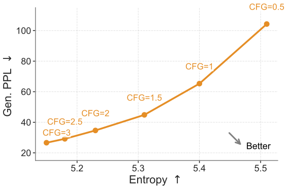
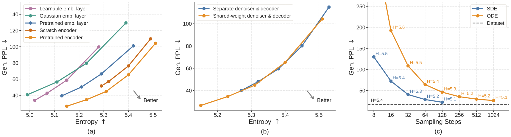
嵌入。上下文嵌入（来自编码器）明显好于不看上下文的查表嵌入。从零在 OWT 上训练的编码器表现不错，但略逊于预训练的 T5 编码器。查表嵌入里，预训练的 T5 词嵌入好于随机高斯嵌入；和去噪网络一起训练的嵌入最差，作者认为是同时优化嵌入和去噪器太难（这正是第 1 节说的连续路线老问题）。结论是：预训练的上下文嵌入是 ELF 最合适的语言表示。
解码方式。共享权重和单独的解码器达到相近的质量—多样性折中，但共享权重能延伸到更低的困惑度，还省掉了一个训练阶段。
采样器。在固定 CFG=1 时，SDE 风格采样在少步区间的困惑度远低于 ODE。作者的解释是采样时引入随机性可以减少误差积累。结合 3.6 节的提醒，这里 SDE 的熵也更低，所以优势里有一部分是多样性换来的。
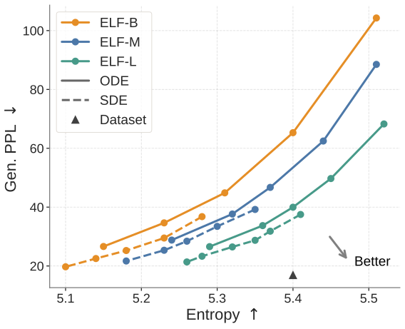
规模。论文据此说 ELF 随规模扩展效果稳定提升。需要注意的是，单看同一个 CFG 强度，大模型的困惑度并不更低，因为它的熵更高。下表摘自附录表 10（64 步、CFG=3）：
| 采样器（CFG=3） | ELF-B 105M | ELF-M 342M | ELF-L 652M |
|---|---|---|---|
| SDE：生成困惑度 / 熵 | 19.72 / 5.10 | 21.69 / 5.18 | 23.31 / 5.28 |
| ODE：生成困惑度 / 熵 | 26.62 / 5.15 | 28.80 / 5.24 | 26.57 / 5.29 |
所以“规模有效”要按整条前沿来读，而不是比单个数字。表 10 还有一个现象：CFG 超过 3 之后效果反转，ELF-B 的 SDE 在 CFG=3.5 时困惑度跳到 37.56、熵回升到 5.30；只有 ELF-L 从 3 加到 4 还在变好（21.37，熵 5.26）。作者因此在大多数消融里只扫 0.5 到 3。
附录 D 里的其余消融，用一句话各交代一下：
- 瓶颈维度（下图）：32、128、512 三档里，128 的平衡最好。
- 去噪模式的比例（附录图 13）：0.8、0.5、0.2 三档里 0.8 最好；去噪训练得太少时，SDE 采样下退化得尤其明显。
- 条件注入方式（附录图 14）：上下文控制标记比 adaLN-Zero 略好，参数从 1.48 亿降到 1.05 亿。
- 优化器（附录图 15）：Muon 比 AdamW 在相同熵下困惑度更低，SDE 下差距更大；作者强调用 AdamW 训练的 ELF 仍然好于其他基线，所以优势不能只归功于优化器。
- 时间表与 \(\gamma\)：见 3.6 节的原文图 16。
- 条件生成的 CFG（附录图 17）：输入条件的 CFG 从 1 加到 2 时 BLEU 和 ROUGE-L 明显提高，再往上缓慢下降，所以默认取 2。
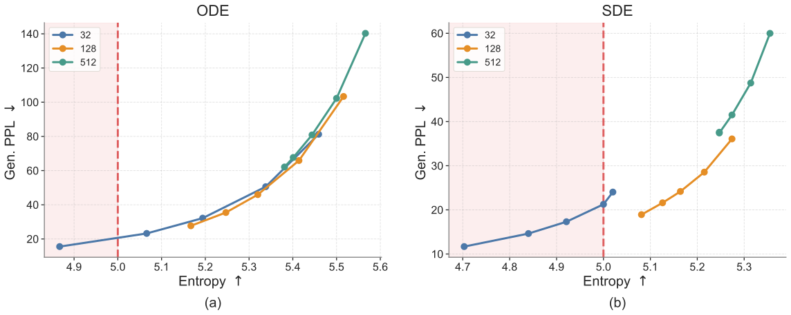
4.3 无条件生成的系统级对比
扩散模型少步生成的常见手段是蒸馏：用一个多步的“老师”模型教出一个少步的“学生”模型。这一节的蒸馏对手有三个。MDLM + SDTT：SDTT（Self-Distillation Through Time）让掩码扩散的学生用更少步数去匹配老师多步生成的输出分布，多轮反复。Duo + DCD：离散一致性蒸馏，Duo 借助它背后隐藏的高斯扩散构造确定性轨迹，从而把图像上的一致性蒸馏搬到离散扩散上（见 Duo 精读页第 5 节）。FMLM：FLM 的“流映射”蒸馏版本，学习从任意时刻直接跳到终点的映射，可以一步生成（见 FLM 精读页）。
对比在“可比的设置”下进行：所有模型都在 OWT 上训练；ELF-B 有 1.05 亿参数，对手约 1.7 亿。ELF 用它的最佳配置：SDE 采样、logit-normal 时间表、自条件 CFG=3；噪声注入强度在 8 步和 16 步时取 \(\gamma=2\)，32 步时取 1.5（附录 E.2）。
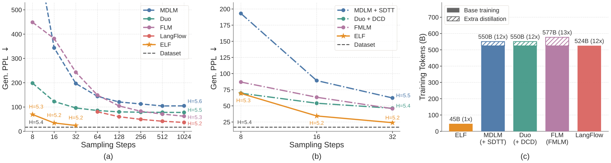
少步胜过多步。ELF 只用 32 步就达到约 24 的生成困惑度，而对手要用 1024 步才能到 36 到 104 之间（读图），所以论文说 ELF 需要的推理计算少得多。附录 E.4 用 6 个随机种子重复评测，给出均值和标准误：8 步 67.32 ± 2.25（熵 5.14），16 步 33.66 ± 1.09（熵 5.16），32 步 24.08 ± 0.16（熵 5.15）。32 步的标准误很小，说明这个数字对采样随机性是稳定的。
不蒸馏也胜过蒸馏。在 8 到 32 步区间，ELF 不经过任何蒸馏，就好于 MDLM+SDTT、Duo+DCD、FMLM 这些需要额外训练的蒸馏模型。附录 B 进一步对 ELF 做了蒸馏（第 5 节）。读图可以看到，8 步时 ELF（约 69）和 Duo+DCD（约 70）几乎持平，明显的领先出现在 16 步和 32 步。
训练 token 少一个数量级。按附录表 8 的估算方法（批大小 × 步数 × 序列长度，再加上蒸馏阶段），对手的基础训练都是 512 × 100 万步 × 1024 ≈ 524.3B token；ELF 是 OWT 的 5 轮，5 × 9.04B ≈ 45.2B。论文的脚注说，他们也试过用更多 token 训练 ELF，但没有看到进一步的提升。
4.4 条件生成：翻译与摘要
条件生成和自回归模型（AR）、离散 DLM（MDLM、Duo、E2D2）、连续 DLM（SeqDiffuSeq、CDCD）在相近的参数规模下比较。有的数字取自文献，有的用公开代码复现。ELF 用在验证集上选出的最佳采样配置：64 步 ODE，自条件 CFG=1，输入条件 CFG=2。下表是原文表 1 的数字（† 表示取自前人论文，‡ 表示作者用公开代码复现；De-En 默认是 †，XSum 默认是 ‡；± 是在评测样本上计算的标准误）：
| 模型 | 参数 | WMT14 De-En BLEU | XSum ROUGE-1 | ROUGE-2 | ROUGE-L |
|---|---|---|---|---|---|
| AR（自回归） | 99M | 25.2 | 30.5 ± 0.13 | 10.2 ± 0.11 | 24.4 ± 0.12 |
| MDLM | 99M | 18.4 | 33.4 ± 0.11 | 11.6 ± 0.10 | 25.8 ± 0.10 |
| Duo | 170M（+35M） | 21.3 ‡ | 31.4 ± 0.12 | 10.1 ± 0.10 | 25.0 ± 0.12 |
| E2D2 | 99M | 24.8 | 28.4 ± 0.11 | 8.3 ± 0.09 | 22.0 ± 0.10 |
| SeqDiffuSeq | — | 21.3 | 19.3 † | 1.7 † | 14.1 † |
| CDCD | — | 24.9 | — | — | — |
| ELF-B | 105M（+35M） | 26.4 | 36.0 ± 0.13 | 12.2 ± 0.11 | 27.8 ± 0.12 |
“+35M”指额外用到的 T5-small 编码器。ELF-B 在两个任务上都是最高分：德英翻译 26.4，比取自文献的 AR 结果 25.2 高 1.2；XSum 上 ROUGE-1、2、L 都比复现的最强对手高（ROUGE-1 比 MDLM 高 2.6，差距远大于约 0.1 的标准误）。附录 E.5 交代了来源：WMT14 上 AR、MDLM、E2D2 的数字来自 E2D2 论文，SeqDiffuSeq 来自 LD4LG 论文，CDCD 来自 CDCD 原文；XSum 上 AR、MDLM、E2D2 用 E2D2 的代码按其论文配置复现（MDLM 也用半自回归方式生成，因为作者发现这样它表现最好），Duo 从官方代码出发，加了交叉注意力条件、CFG 和 T5-small 输入编码器，生成时用 1000 步。
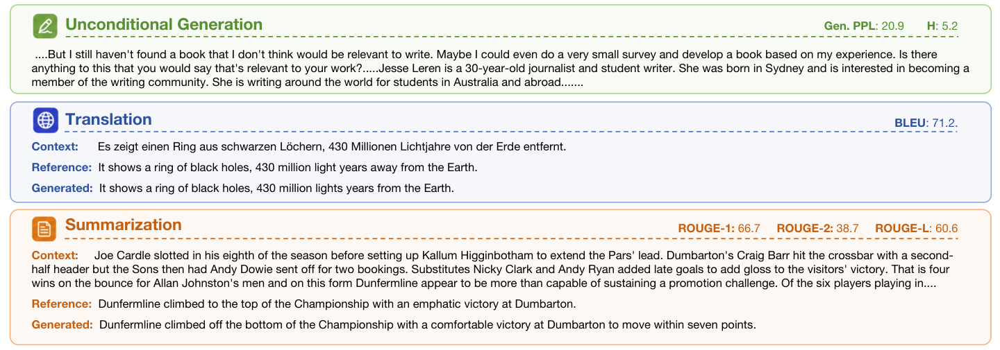
4.5 结果的份量：这些数字能说明到什么程度
上面的结果说明了一件确定的事：在 OWT、约 1 亿参数这个学术界常用的设定里，一个“几乎全程连续、只在最后一步离散化”的流匹配语言模型，用 32 步就能生成 GPT-2 Large 眼里相当通顺的文本，翻译和摘要也做得不错。把这些数字推广开之前，下面几点需要先弄清楚。
- 和自回归模型比，比的是什么。无条件生成的对比里没有自回归模型，只有扩散类对手。条件生成里，XSum 的 AR 基线是用 E2D2 代码从零训练的 9,900 万参数模型（Qwen3 分词器、28 层、隐藏维度 256，附录表 11），没有任何预训练部件；ELF 则带着一个预训练好的 T5-small 编码器，既用来编码输入，也定义了输出的嵌入空间。T5 论文报告其公开模型在多任务混合数据上训练了超过 1 万亿 token。所以 ELF 对 AR 的领先，混合了“方法更好”和“用了外部预训练表示”两个因素，论文没有做把两者分开的实验（附录 D 的“从零训练编码器”只在无条件生成上做过）。WMT14 的 AR 数字 25.2 取自 E2D2 论文，训练配置是否与 ELF 一致，论文没有说明。
- 似然：完全没有比。ELF 不报告困惑度，只报告生成困惑度。MDLM、Duo 有似然上界，LangFlow 有基于 ODE 的似然界（它的摘要报告 OWT 上 24.6；据本站 LangFlow 精读页，后来的 RePlaid 用公开权重复算，指出开启自条件时这个界漏了一项，补全后约 33），这些都无法和 ELF 对比。“生成质量更好”不等于“作为语言模型的概率估计更好”。
- 生成困惑度要和熵一起看，而熵并没有对齐。ELF 系统级对比的样本熵约 5.15，真实数据在同一张图上标为 5.4；1024 步的对手熵分别是 MDLM 5.6、Duo 5.5、FLM 5.3、LangFlow 5.2。熵越低困惑度越容易低，所以 ELF 对 MDLM、Duo 的大幅领先里有一部分来自多样性更低。和 LangFlow 的对比熵最接近（约 5.15 对 5.2），约 24 对约 36 的差距相对可信。论文没有给出“在相同熵下”的系统级对比，而它自己的消融图都是按前沿来比的。第三方的后续工作（第 7 节）专门指出，ELF 的无条件样本比人写的文本更重复，而生成困惑度会掩盖这一点。
- 步数和速度。ELF 的“32 步”实际是 32 次去噪加 1 次解码，共 33 次网络调用（推算）；自条件和训练时 CFG 在推理时都不增加调用次数，这一点是真的省。对手的 1024 步是各自论文的默认设置。论文没有报告任何墙钟时间、硬件吞吐或批大小下的速度，所以“推理计算少得多”只能按网络调用次数理解；每次调用的代价也不能简单按参数量（ELF-B 1.05 亿，对手约 1.7 亿）来比：对手用 GPT-2 的 5 万词表，按 50,257 × 768 推算，一张嵌入表就约 3,900 万参数，查表本身几乎不花计算；另一方面，离散模型每一步都要算一次 5 万维的输出分数，而 ELF 只在最后的解码步才算词表分数。
- 训练 token 少 10 倍，不等于训练算力少 10 倍。第一，所有方法用的是同一份约 90 亿 token 的 OWT，差别在于看几遍：ELF 5 轮，对手约 58 轮（推算：524.3B ÷ 9.04B）。论文说 ELF 再多训也不提升，所以更准确的说法是“ELF 收敛得快、也更早饱和”。第二，ELF 每个训练样本的计算更多：去噪分支要为训练时 CFG 先后算两遍网络（3.5 节），每个样本还要过一遍 T5 编码器。第三，T5 编码器自身的预训练没有计入 45B。论文没有给出训练 FLOPs 的对比。
- 分词器不同。见 4.1 节：ELF 生成 1024 个 T5 token，对手生成 1024 个 GPT-2 token，再统一用 GPT-2 分词后评测。
- 对手的数字来源与一处不一致。正文图 7b 和附录 B 的表 4 都给出了 MDLM+SDTT、Duo+DCD 在 8、16、32 步的结果，但数字对不上：图 7b 读图约为 193 / 89 / 62 和 70 / 54 / 46，表 4 却是 112.66 / 57.74 / 40.41 和 118.21 / 78.74 / 63.98。FMLM 的数字两处一致（86.50 / 63.63 / 45.09）。论文没有解释差异的来源（可能一处用的是原论文报告值，另一处是重新评测），本站也无法核实。按表 4 的数字，32 步时 MDLM+SDTT（40.41）比图 7b 显示的好得多，而 ELF 的 24.08 仍然更低，只是熵（5.15）比它的 5.34 低。
- 条件生成的对比口径。两个任务的数字有的取自文献、有的复现，复现时对手的生成方式（半自回归、1000 步）和 ELF（64 步 ODE）不同。官方代码用 sacreBLEU 计算 BLEU 并设置了
lowercase=True（不区分大小写，通常会比区分大小写的分数高一些）；取自文献的 BLEU 是否用同样的设置，论文没有说明。CDCD 的 24.9 来自 2022 年的原论文，评测细节可能不同。XSum 上 ELF 和 Duo 都用了 T5-small 编码器处理输入，这一组比较的输入表示是对齐的。 - 规模和超参数选择。最大的模型只有 6.52 亿参数，没有十亿级的结果，也没有下游的理解、推理类基准。系统级结果用的 CFG 和 \(\gamma\) 是按步数分别调过的“最佳配置”，无条件生成没有单独的验证集，这些超参数和最终报告的是同一个指标。
5 附录 B（v2 新增）：用渐进蒸馏把 ELF 压到 1 步
渐进蒸馏由 Salimans 与 Ho 在 2022 年提出，用于图像扩散模型。思路是“每轮把步数减半”：先让学生用 1 步模仿老师的 2 步，学会之后，这个学生成为新的老师，再教下一个学生用 1 步模仿它的 2 步。比如从 1024 步出发，每轮减半，8 轮之后就是 4 步。因为每一轮只需要把两步合成一步，学习难度不大，误差也就不会一下子累积太多。MDLM 的 SDTT、Duo 的 DCD 也都采用了这种多轮减半的做法。
ELF+PD 的做法和原始渐进蒸馏有一个区别：老师始终是同一个 64 步的 ELF，并不在每轮换成上一轮的学生。课程一共 5 轮（原文表 3）：
| 轮次 | r1 | r2 | r3 | r4 | r5 |
|---|---|---|---|---|---|
| 学生的步数 N | 16 | 8 | 4 | 2 | 1 |
| 学生每一步对应老师的步数（64 / N） | 4 | 8 | 16 | 32 | 64 |
第一轮的学生从老师初始化，之后每一轮的学生从上一轮的学生初始化。
蒸馏目标怎么来的。给定一个时间区间 \([t,r]\)，先让老师用 \(K\) 个小步（数值求解器）把 \(\mathbf{z}_{t}\) 推到 \(\mathbf{z}_{r}\)。学生只走一步，它的一步是 \(\mathbf{z}_{t}+(r-t)\cdot(\mathbf{x}_{\theta}-\mathbf{z}_{t})/(1-t)\)（用 x 预测换算成速度，见 3.2 节）。要让这一步正好落在 \(\mathbf{z}_{r}\)，解出学生应该输出的“干净嵌入”：
把 \(\tilde{\mathbf{x}}\) 代回学生的一步，可以验证 \(\mathbf{z}_{t}+(r-t)(\tilde{\mathbf{x}}-\mathbf{z}_{t})/(1-t)=\mathbf{z}_{r}\)。所以 \(\tilde{\mathbf{x}}\) 就是“把老师多步走出的位移，折算成学生一步需要预测的干净嵌入”。蒸馏保留 ELF 的两分支结构：去噪分支把式 (1) 的 MSE 换成这个蒸馏损失，解码分支仍用原来的交叉熵，网络仍然是共享权重的去噪器兼解码器。
训练与采样设置。每一轮在 OWT 上训练 1 轮（0.1 轮预热），超参数与原始 ELF 相同；仍然使用带自条件的训练时 CFG，每个样本抽一个 CFG 强度，老师和学生用同一个强度；时间按同样的 logit-normal 分布抽取。采样用 SDE 风格采样器和 logit-normal 时间表：1、2、4、8 步时 \(\gamma=1.5\)、自条件 CFG=2.5；16、32 步时 \(\gamma=2.0\)、CFG=2.0。蒸馏增加的训练量是 5 轮 × 9.04B ≈ 45B token，加上原来的 45.2B，合计约 90B，即原文图 9b 标的“90B（2.0×）”（推算）。
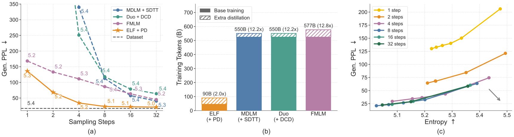
精确数字见原文表 4（OWT，序列长度 1024；每格是生成困惑度 / 熵）：
| 步数 | MDLM + SDTT | Duo + DCD | FMLM | ELF + PD |
|---|---|---|---|---|
| 1 | 1260.60 / 5.26 | 5743.90 / 6.02 | 168.30 / 5.17 | 136.10 / 5.26 |
| 2 | 877.22 / 5.34 | 891.16 / 5.41 | 133.29 / 5.25 | 68.25 / 5.24 |
| 4 | 339.73 / 5.38 | 250.86 / 5.37 | 111.31 / 5.26 | 34.33 / 5.16 |
| 8 | 112.66 / 5.41 | 118.21 / 5.41 | 86.50 / 5.36 | 23.18 / 5.07 |
| 16 | 57.74 / 5.39 | 78.74 / 5.43 | 63.63 / 5.29 | 22.12 / 5.06 |
| 32 | 40.41 / 5.34 | 63.98 / 5.40 | 45.09 / 5.25 | 21.32 / 5.04 |
课程有没有用。原文表 5 给出每一轮结束后的学生在 1、2、4、8 步下的表现。早期轮次的学生只在步数多时正常，步数一少就退化：第 1 轮的学生 1 步生成的困惑度只有 4.9，熵却只有 1.72；第 2 轮是 1.7 和 0.64；第 3 轮是 30.7 和 3.60。这些都是熵低于 5.0 的退化输出，也就是不停重复同几个词，恰好演示了生成困惑度可以被重复“刷低”。到第 4 轮，1 步生成恢复到 165.9（熵 5.35）；第 5 轮（最终的 1 步学生）在 1、2、4、8 步上都是最好的：136.1、68.2、34.3、23.2。附录 F.4 给出了最终学生在各步数下的样例：1 步的文本语法破碎、词语重复（困惑度 132.89），8 步的文本通顺，但同一句意反复出现。
- 1 步、2 步的对比最有说服力。和 FMLM 相比，1 步时 ELF+PD 的困惑度更低（136.10 对 168.30），熵还更高（5.26 对 5.17）；2 步时熵几乎相同（5.24 对 5.25），困惑度约为对手的一半。这两格两项指标同时占优或熵对齐，结论可信。
- 8 到 32 步的领先伴随明显更低的熵。ELF+PD 的熵是 5.04–5.07，对手是 5.25–5.43，真实数据约 5.4。这几格不是同熵比较。
- 对手的数字与正文图 7b 不一致（见 4.5 节），论文没有说明哪一组是重新评测的。
- “少用训练 token”仍然是按看过的 token 估算的，并且 ELF+PD 的每个训练样本都要先让 64 步的老师跑若干小步来生成目标，这部分计算没有体现在 token 数里。
蒸馏的 PyTorch 代码在官方仓库的 distillation 分支（2026-06-26 发布），作者另有一篇博客 ↗介绍这部分。
6 结论，以及 ELF、FLM、LangFlow 三者的区别
作者的总结是：ELF 是一个在连续嵌入空间里、用连续时间流匹配来生成语言的连续扩散语言模型。和以前的 DLM 不同，它让去噪轨迹保持连续、只在最后一步离散化，因此可以直接搬用连续扩散模型的技术。实验上，和领先的离散 DLM 及已有的连续 DLM 相比，它在多个语言生成任务上取得了很好的质量—效率折中：用更少的采样步数和更少的训练 token 得到更低的生成困惑度。作者认为这说明连续 DLM 仍然是扩散语言建模中有前途的方向。论文本身没有单列“局限”一节。
下表是本站对三篇连续流语言模型（以及两篇更早的连续模型）的对照，只列能从各自摘要、ELF 附录表 2 或本站相应精读页核实的内容：
| 方法 | 连续状态在哪里 | 沿轨迹的词级监督 | 怎样报告“好不好” | 少步生成 |
|---|---|---|---|---|
| Diffusion-LM（2022） | 和模型一起学的词嵌入 | 有，推理时每步还要钳到最近的词向量 | 控制任务成功率；似然要另训一套模型（精读页） | 无，200–2000 步 |
| Plaid（2023） | 可学习的词嵌入 | 有（ELF 表 2 的归类） | 连续时间变分下界给出的似然；1B 模型超过 GPT-2 124M | — |
| FLM / FMLM（2026-02） | one-hot 编码（维度等于词表大小，加噪后可以离开单纯形） | 有，流和流映射都用交叉熵式目标 | 只报告生成困惑度与熵（LM1B、OWT），不报告似然 | 流映射蒸馏，FMLM 可一步生成 |
| LangFlow（2026-04） | 可学习的词嵌入 | 有，Bregman 散度形式的流匹配 | 推导了基于 ODE 的似然界，报告困惑度 LM1B 30.0、OWT 24.6（后续工作指出 OWT 的数字有漏项，补全后约 33，见精读页）；也报告生成困惑度 | 不蒸馏；ELF 图 7 里用 1024 步 |
| ELF（2026-05） | 冻结的 T5 编码器给出的上下文嵌入 | 无，只在最后的解码步用交叉熵 | 只报告生成困惑度与熵，不报告似然 | 不蒸馏 8–32 步；v2 用渐进蒸馏到 1 步 |
概括起来：FLM 改的是状态空间和少步机制（在单纯形上定义流，并利用连续流特有的“流映射”做一步生成）；LangFlow 改的是训练目标、噪声表和评测（Bregman 散度、可学习噪声表、自条件，并尝试补上连续模型一直缺的似然界，这个界后来被指出有漏项）；ELF 改的是表示和离散化的位置（换成预训练的上下文嵌入、轨迹上完全不碰词表、最后一步共享权重解码），并把图像流模型的整套工具（x 预测、CFG、SDE 采样、渐进蒸馏）原样搬了过来。三者都在 OWT 上和 MDLM、Duo 比较，但评测口径不同：LangFlow 能报似然，ELF 不能；FLM 和 ELF 都强调少步，前者靠专门的流映射，后者靠采样器、引导和后加的蒸馏。
7 后来怎么样了
这篇论文 2026 年 5 月才发布，到本页写作时（2026-10-20）只有五个月，还谈不上长期影响，下面只列能查到的事实。
发表与代码。论文已被 NeurIPS 2026 接收为 poster（会议页面 ↗），arXiv 上的 v2 仍标注为技术报告。官方仓库 lillian039/ELF 有 1,049 个 star（2026-10-20），提供 JAX/TPU 主线、PyTorch 分支和蒸馏分支；Hugging Face 上公开了 ELF-B/M/L 的 OWT 权重、ELF-B 的翻译和摘要权重，以及蒸馏后的 ELF-B-PD 权重。
后续工作。Semantic Scholar 在 2026-10-20 列出的引用论文已有三十多篇，几乎都是 2026 年 6 到 10 月的预印本。下面几篇和 ELF 直接相关（本站只读了它们的摘要，数字均为各自摘要所报告）：
- 重复问题。“A Dominant Self-Conditioning Direction Drives Repetition in Unconditional Continuous Diffusion Language Models”（arXiv:2607.00588 ↗）直接分析 ELF：它发现 ELF 的无条件样本比人写的文本更重复，而生成困惑度会给重复文本打低分、掩盖这个问题。作者把原因追溯到自条件的反馈回路：每一步的干净预测被反复带进下一步，把表示推向一个导致重复的方向。他们提出一个推理时、不需训练的修正，把 ELF-B 的 4-gram 自重复率从 7.28% 降到 4.48%。这和本页 4.5 节对“熵没有对齐”的担心是同一件事，也说明自条件 CFG 的副作用值得注意。
- 换更好的嵌入。“Scaling and Distilling Text Embeddings for Better Diffusibility”（arXiv:2610.01016 ↗）研究“哪种嵌入最适合扩散”：把编码器从 T5 换成同一家族更强的 T5Gemma-1、T5Gemma-2 会大幅提升生成质量，但原始的 T5Gemma-2 嵌入区分得太开，作者再把它蒸馏成更“连通”的嵌入；中等规模模型在真实文本熵下的生成困惑度为 17.8（真实文本 15.4）。这延续了 ELF 图 5a“嵌入的选择很关键”的结论。
- 连续 DLM 的设计空间。“On the Design Space of Continuous Diffusion Language Models”（arXiv:2610.13834 ↗）专门研究自条件和嵌入几何这两个“杠杆”，解释自条件为什么有效（它纠正了训练与推理之间的状态分布不匹配），并在 1.7B 规模上报告了对离散扩散的若干胜出。
- 引导与采样。“How to Guide Your Language Flow”（arXiv:2609.19356 ↗）提出用冻结模型的内部状态构造引导信号的“探针引导”，在连续扩散语言模型的无条件生成上报告了新的最好结果。“A Step in the Right Place”（arXiv:2610.15527 ↗）只调整采样时刻的位置，在 XSum 和 WMT14 上让冻结模型用 16 步超过它原本的 64 步，端到端延迟降低约 3.8 倍；这两个任务和 64 步正是 ELF 条件生成的设置（摘要没有点名所用模型，本站未核实）。
- 蒸馏与推广。“Distribution Matching Distillation for Continuous Diffusion Language Models”（arXiv:2609.40235 ↗）把分布匹配蒸馏用到连续 DLM 上，在 OWT 上报告 4 次网络调用、熵 5.44 时生成困惑度 45.6。“Embedded Graph Flows”（arXiv:2609.05328 ↗）把“学连续嵌入、把噪声输运到嵌入、最后一步读出类别”的思路用到分子图生成上。“Multimodal Flow”（arXiv:2609.40362 ↗）把语言和图像都放进连续嵌入里，用一个共享的流匹配骨干做统一的多模态生成。
到目前为止，本站没有查到对 ELF 主要数字的独立复现；上面重复问题那篇是唯一对 ELF 输出做了第三方再评测的工作。ELF 也还没有被放大到十亿参数以上。它留下的主要问题是：去掉外部预训练编码器的帮助后效果还剩多少，在相同熵、相同算力下和离散扩散相比如何，以及连续模型能否给出可比的似然。
本站相关页面：连续路线的起点见 Diffusion-LM 精读；同期的两篇见 FLM 精读和 LangFlow 精读；被比较的离散模型见 MDLM 和 Duo 精读。
作者
单位按论文署名（八位作者都只署 MIT）。背景只列可公开查证的信息：作者主页、实验室与机构页面。
影响力
- 引用：见页首（Semantic Scholar 快照）。
- 发表：NeurIPS 2026 poster（会议页面 ↗，OpenReview 编号 z3I6Aj563f）。arXiv v1 发布于 2026-05-11，v2 于 2026-06-26 增加附录 B 的蒸馏结果，两版都标注为技术报告。
- 开源：lillian039/ELF，1,049 个 star、85 个 fork（截至 2026-10-20），MIT 许可；仓库创建于 2026-05-11，与 arXiv 首版同日。主线是 JAX/TPU 实现，另有
pytorch_elf和distillation两个 PyTorch 分支。权重在 Hugging Face 的 embedded-language-flows ↗ 下：ELF-B/M/L-owt、ELF-B-de-en、ELF-B-xsum（JAX 版和带-torch后缀的 PyTorch 版），以及蒸馏后的 ELF-B-PD-owt-torch 和它的老师 ELF-B-owt-teacher（2026-10-20 查询）。README 给出的论文数字：ELF-B 32 步 SDE 生成困惑度 24.1（熵 5.15），ELF-M、ELF-L 64 步分别为 21.7（5.18）和 23.3（5.28）。 - 后续工作：见上面“后来怎么样了”。
延伸阅读
- Diffusion-LM 精读：连续嵌入扩散的起点，取整误差与 clamping。
- Flow Map Language Models 精读：在 one-hot 单纯形上的连续流，以及一步生成的流映射蒸馏。
- LangFlow 精读：Bregman 散度的流匹配、ODE 似然界与可学习噪声表。
- MDLM 精读、Duo 精读：本文的主要离散对手，以及 SDTT、DCD 两种蒸馏。
- D3PM 精读、SEDD 精读、Discrete Flow Matching 精读：离散路线的基础。
- 旧版：扩散 LLM 从头讲起（连续、掩码、均匀三族的对照）。
- 返回论文书架
本页是对论文的中文精读笔记，正文为本站撰写，并非翻译。数字与结论以原文为准：arXiv:2605.10938（本页依据 v2）。图片取自原文 arXiv:2605.10938v2，按 CC BY 4.0 许可使用，未做修改；版权归原作者 Keya Hu、Linlu Qiu、Yiyang Lu、Hanhong Zhao、Tianhong Li、Yoon Kim、Jacob Andreas、Kaiming He 所有。标“示意图”的图为本站绘制。